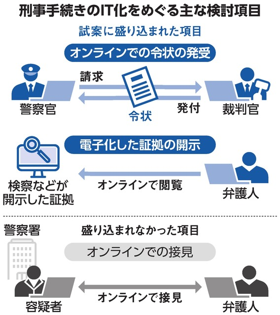

刑事手続きのIT化 法制審の部会が試案
“逮捕状など電子化

なぜ気になったか
どう考えるか
捜査や裁判など刑事手続きのIT化に向け、国の法制審議会の部会が試案を示しました。逮捕状などの作成や管理を電子化し、請求や発行などの手続きをオンラインで行えるようにするとしています。
書類への署名や押印に加え、対面で手渡す必要があるものも多く時間がかかるものだと思ったから
捜査段階や裁判手続きの電子化や対面手続きのオンライン化など手間がかかるモノが一気に電子化になったことで迅速に行えると考えました。ですが電子データの改ざんなどがデメリットでもあると考えられます。